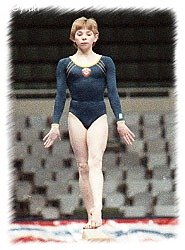

Oksana Averkova (USSR)
1986 Moscow News AA Champion
 |
Oksana was born on August 12, 1970 in Moscow. She was coached by Nadezhda Maslennikova at the October District Sports School.
Competition Results
1982
Bucharest v. Moscow: 2nd Team, 2nd AA
1983
All-Union Schoolchildren's Spartakiade: 3rd AA, 3rd FX
East Bloc Spartakiade: 2nd AA
Jr. USSR Championships: 2nd AA
1984
Jr. USSR Championships: 2nd AA, 3rd FX
Trud Championships: 2nd AA
1985
Junior Competition of Socialist Capitals: 1st AA, 1st V, 1st UB, 1st FX, 2nd B
Moscow News: 3rd AA, 1st UB
USSR Championships: 7th AA
USSR Cup: 12th AA, 10th V
1986
Belgian Gym Masters: 2nd AA, 1st V, 1st B, 2nd UB, 2nd FX
Moscow News: 1st AA, 1st UB, 2nd B
USA-USSR Dual Meet: 1st Team, 6th AA
USSR Championships: 16th AA
USSR Cup: 4th AA, 4th V, 5th B, 6th UB, 7th FX
This page was created on April 10, 2000
and was last updated on July 2, 2025.
© Gymn Forum